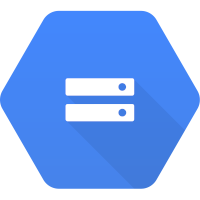
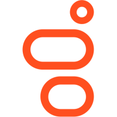

Summary
bramp@
Since school Andrew has had the nickname bramp, and it has stuck.
has broad knowledge in distributed systems, proven expertise in operating them, and the ability to quickly go deep when needed. This has provided him the credibility to influence across organizations, ensuring the strategy, direction, and decisions of multiple teams are integrated and aligned to achieve strategic business goals.
He has been a foundational resource, with a track record of building teams, growing leads, and delivering on complex, multi-dimensional, ambiguous projects. He scales himself by focusing on setting an example, and enabling everyone around him to be successful.
Any intelligent fool can make things bigger, more complex,
and more violent. It takes a touch of genius -- and a lot of courage -- to
move in the opposite direction.
- E.F. Schumacher
Work Experience
Founder @ Geocrew
August 2023 - Present
Wanted to take a break from big business, and start his own company. Developed an augmented reality, virtual scavenger hunt, escape room experience.
- Developed a mobile app, and backend services.
- Developed puzzles, mini-games, and worked with artists, vendors, to create the experiences.
- Learnt a lot about business, marketing, sales, etc.
Ultimately decided to shelve the project, so I could return to making larger scaler projects.
Uber Tech Lead, Storage SRE
Google - August 2020 - August 2023
Responsible for all storage products across Google Cloud, and for internal use cases (Drive, Photos, Gmail, etc).
- Partnered with engineering, product, and software teams across the orgs to set technical vision, strategy, and roadmaps, to deliver reliability, performance, and resilience at scale.
- Delivered multiple large-scale engineering projects.
- Acted as a critical resource across internal or external partner orgs, and are a recognized leader for reliability, scalability, performance, and resilience, with a deep understanding of key business and customer needs.
Google - August 2020 - August 2023
Responsible for deciding how all teams across Google will work with partners to operate a new Sovereign Trusted Partner Cloud (TPC) stack, in terms of Monitoring, Deployment, Incident Response, SLOs, etc. TPC takes Google's internal software and hardware stack and allows 3rd parties to run and operate it.
- Identified and solved complex, multi-dimensional risks across teams, products, and orgs. Influence cross-org collaborations, ensuring strategy, direction, and decisions of multiple workstreams were aligned to achieve business goals.
- Worked with external partners, and internal stakeholders on requirements, implementation, etc

Google - August 2017 - August 2020
Responsible for all GCS Object Storage SRE teams (~40 folks)
- Managing both internal and external object storage use cases (xxx EiB of data under management, ~XX M qps).
- Sustained growth of business 2x every ~18 months, in QPS, Bandwidth and Bytes stored.
- Grow team, hired managers, and ICs, setup team structure, processes, training, etc.
Manager, Android / Play SRE
Google - August 2014 - August 2017
Responsible for all Android backend services, and Play Store. Managed two teams of SREs (approx ~16 folks), growing to three teams. At the time, Android was used on over a billion devices, and Play made >$1B/quarter in revenue. These were mission critical services.

Manager, Engineering
Led the product development efforts with respect to Mobile.
- Created new product lines to enable new functionality, e.g, iBeacon, Passbook, Geo-fencing, MMS messaging.
- Applied best practices in mobile development and cloud operations, learnt at 2ergo/SoundBite to the rest of Genesys.
- Maintained existing infrastructure, serving popular mobile websites, and sending millions of SMS messages a month across 20 countries.
July 2013 Genesys acquired SoundBite.
Manager, Mobile Development
SoundBite - March 2012 - July 2013
Led cross-functional team of developers, system administrators and QA testers, for the mobile marketing product lines.
March 2012 SoundBite acquired 2ergo Americas.
Head of Technology, Mobile Development
2ergo Americas - October 2010 - March 2012
Responsible for all things technical at a ~15 person mobile marketing company. Developed products, ran data center ops, worked with clients, enabled sales, etc.
Research Associate
Conducted post doctoral research into large scale distributed systems, peer-to-peer, content distribution networks (CDNs), and low level optimisations of the Linux network stack.
Education
Ph.D. in Computer Science
B.Sc. (1st w/ honours) in Computer Science
| Dissertation | Peer-to-Peer Media Streaming |
| Languages: | C++, Java, Go, Rust, Dart, Python, JavaScript, etc. |
| Platforms: | Flutter, gRPC, Tomcat, JBoss, Linux, FreeBSD, etc |
| Interests: | Open Source, Security, 3D Printing & Design, Rock Music. |